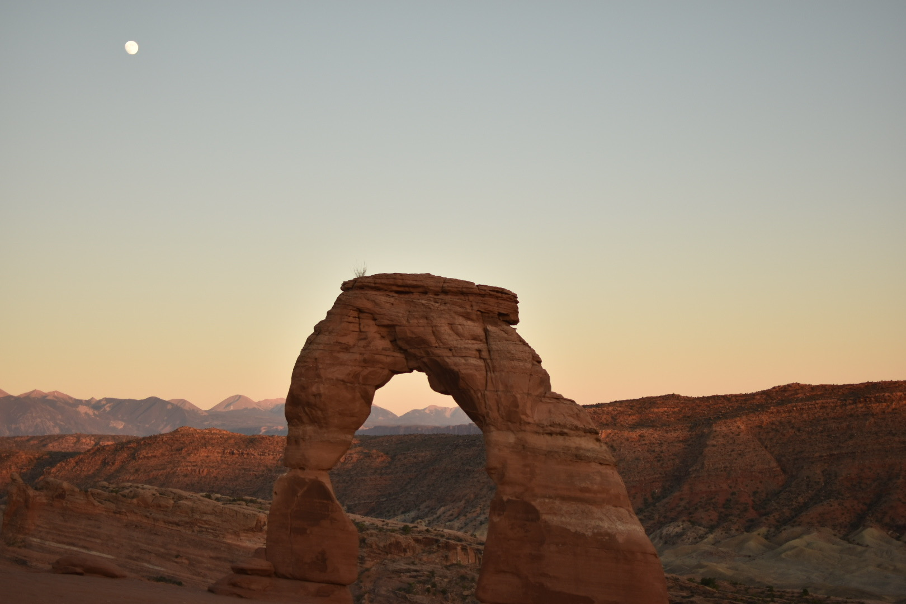
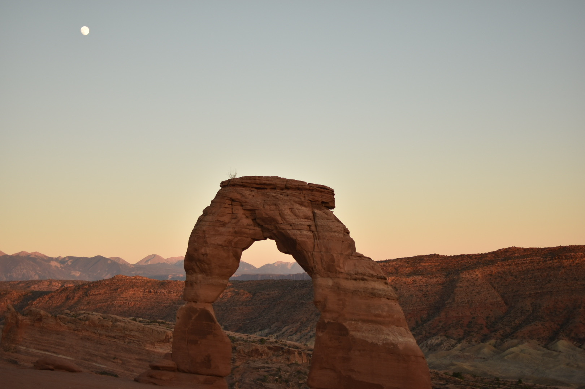

Outdoor exploration is a hobby and even a lifestyle for many in the US. Last year, the National Park Service received over 327.5 million recreation visits; up 9 million visits (2.9%) from 2018 (National Park Service). Whether you’re a seasoned nature-lover or are looking to begin your first outdoor adventure, this site is here to provide you with the information that you need to know.
Here you’ll find the history behind outdoor recreation as a hobby, tips and tricks from the pros to make the most of your next outdoor endeavor and an interactive map detailing some of the country’s most popular spots to explore.
 


Website and photos by Maddy Montoya